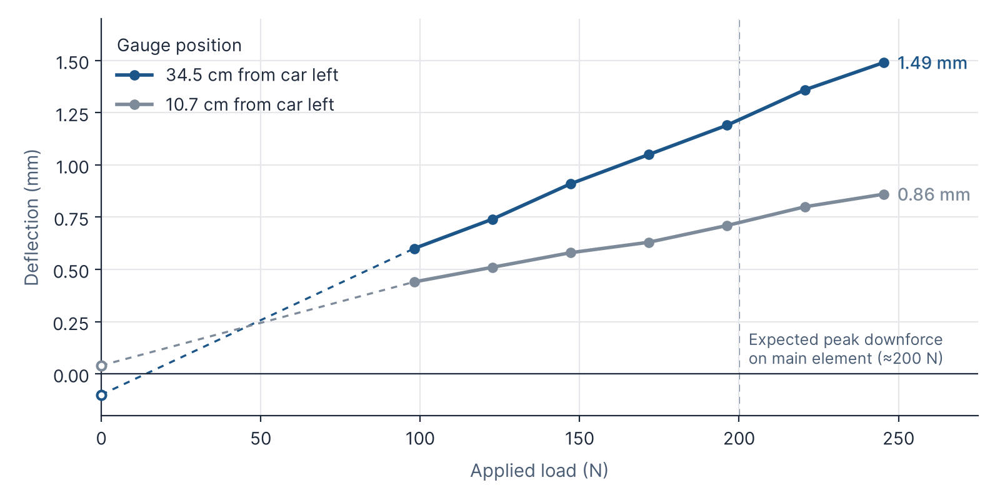
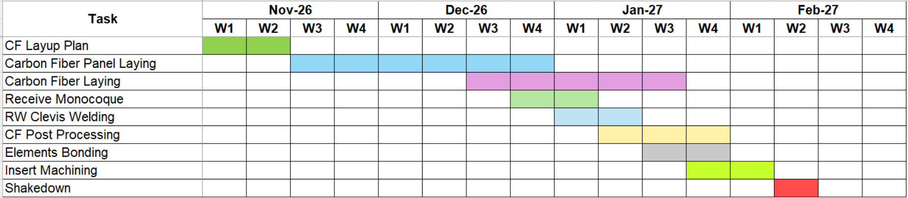

8. Future and Validation
8.1 Rear Wing Loading Test
Deflection testing was conducted on the rear-wing main element to evaluate its structural stiffness under aerodynamic load. Mounted on a test jig with two dial gauges underneath (Figure 22), the element was loaded centrally in 10 kg and 2.5 kg increments up to 25 kg (Figure 23), matching the expected ~200 N peak main-element downforce.


This setup will be replicated in Ansys to validate the composite material properties. Dial gauges at 10.7 cm and 34.5 cm from the car’s left side recorded steady deflection with increasing mass, reaching 0.86 mm and 1.49 mm respectively at 25 kg (Table 5, Figure 24).
| Applied mass (kg) | Applied load (N) | Deflection (mm) | |
|---|---|---|---|
| 10.7 cm from car left | 34.5 cm from car left | ||
| 0 (start) | 0 | 0.04 | −0.10 |
| 10 | 98.1 | 0.44 | 0.60 |
| 12.5 | 122.6 | 0.51 | 0.74 |
| 15 | 147.2 | 0.58 | 0.91 |
| 17.5 | 171.7 | 0.63 | 1.05 |
| 20 | 196.2 | 0.71 | 1.19 |
| 22.5 | 220.7 | 0.80 | 1.36 |
| 25 (maximum) | 245.3 | 0.86 | 1.49 |

8.2 Cotton Tuft Testing

Cotton tufts will be taped across the aerodynamic surfaces during track testing to visualise local airflow. Tuft direction and motion indicate attached versus separated or turbulent flow, enabling direct comparison with CFD streamlines.
8.3 Pressure Validation

A pressure scanner will record surface pressures at selected taps across the car for direct comparison with STAR-CCM+ pressure plots. This checks how closely simulations match the manufactured car and whether build tolerances degrade aerodynamic performance.
8.4 Limitations and Future Work
Structural validation. Carbon-fibre layups vary from part to part, so the Ansys model may not match the Section 8.1 measurements at first. Once it does, it can be used to check whether the wing’s deflection under load affects aerodynamic performance.
Mesh independence. All CFD results in this report come from a single mesh, yet several of the gains are small: the rear wing raised straight-line full-car downforce by 1.3% (Section 6.2.1), and the front-wing changes raised cornering downforce by 2–4% (Section 6.1.4). The baseline case will therefore be solved on at least three meshes with a refinement ratio above 1.3, and the grid convergence index (GCI) will give an uncertainty band for full-car downforce and drag [5, 6], as has been done for other Formula Student cars in STAR-CCM+ [7]. A design change smaller than this band cannot be claimed as an improvement. The study will also show the coarsest mesh that can be used for future runs.
Iteration count. Refining the mesh does not reduce the number of iterations a run needs, so two further changes target this directly:
- Mesh quality. Skewed cells, abrupt changes in cell size and poor prism-layer transitions slow convergence [8]. Mesh quality metrics will be checked in STAR-CCM+, and poor cells near the wings, wheels and floor will be improved.
- Monitor-based stopping. Cornering runs stop at a fixed 2000 iterations, although most settle by about 1000 (Section 5.3). Stopping each run once the running averages of downforce and drag level off [9] would end those runs early. The averaging window must be long enough not to stop on a temporary plateau like the one in Cornering 10.
Where the forces keep oscillating because the flow is unsteady, as in the wheel wakes, the criterion will be applied to the running average and the size of the oscillation reported with each result.
8.5 Projected Working Timeline

Figure 27 outlines our projected manufacturing timeline. We have just begun laying our flat panels and expect to finish laying them by the end of December. After sending them for water jetting, we will commence the layup of the larger elements and the front wing flaps. The Rear Wing's clevises will be welded shortly after the team receives the monocoque. Once we receive the water-jetted parts and finish curing the larger elements we will commence the bonding and assembly of the aerodynamic package. We expect to finish the first set by mid-February. The validation tests will be conducted during our test runs.